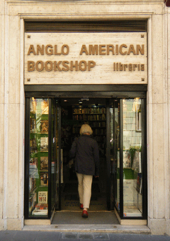
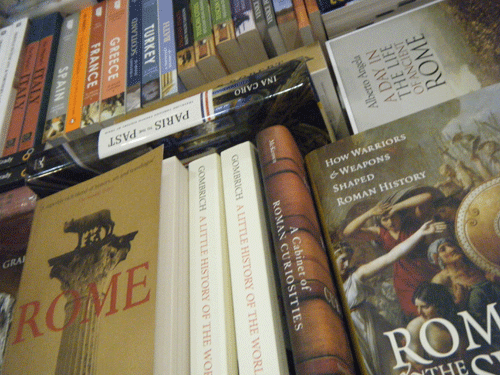

Next Best English Bookshop in Rome: Anglo American Book
Continuing on through my favorite places around Rome is (surprise!) another bookshop. I have book-browsed the shelves of The Anglo-American Book Co. on Via della Vite, 102, for as long as I have been in Rome. While the Open Door Bookshop is for sessions of book buying adventure, never knowing what bound treasure I’ll find, Anglo-American Book stocks what’s new. It can’t compare to those giant shops in the States—those dizzying shelves and shelves and rooms and stacks of new books. But I’ve always left with at least a list in my head of more books I want to read.

Besides from recently published there is an excellent literature and art section; a mouth-watering area of Italian writers—I’ve been eyeing Elsa Morante’s History for the last six months; and an impressive wall of black Penguin Classics bordered by silver Penguin Modern Classics.
It was a book of the latter that I bought yesterday, Virginia Woolf’s Orlando. On the bus back home I read some of Sarah Gilbert’s introduction. Apparently I read enough for Virginia Woolf to visit my dreams, where I told her that I haven’t read any of her books before, but was going to start with Orlando, wasn’t that strange? She didn’t seem to think so. Though I still wonder if To the Lighthouse wouldn’t be the best of her bibliography to begin with? We took a very small plane ride together, then she disintegrated.
Anglo-American Book Co. has been in Rome in one form or another since 1953. Though it’s not as small and family run as the Open Door, it maintains its independent spirit, though I do wish it would maintain more titles from independent presses—impossible or extremely difficult to find in Rome. No matter, Anglo-American Book has the bread and butter for any decent book collection.
Via della Vite, 120, near the Spanish Steps; +39 06 6795222; closed Sundays

· · · · · · · · · · · · · · · · · · · ·